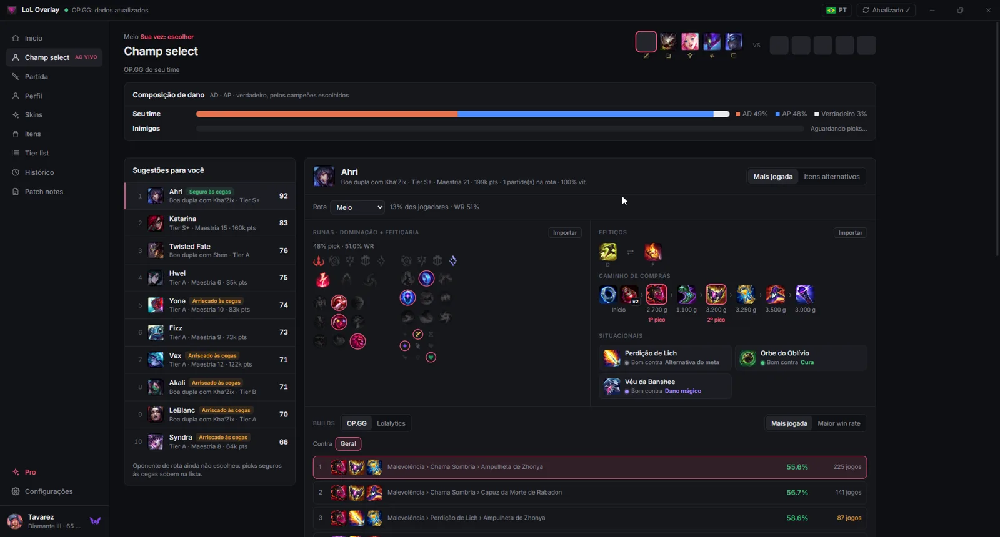
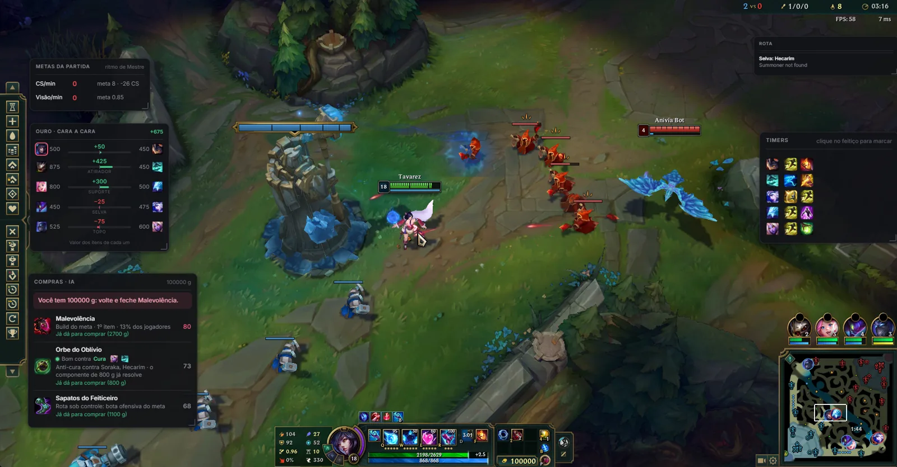
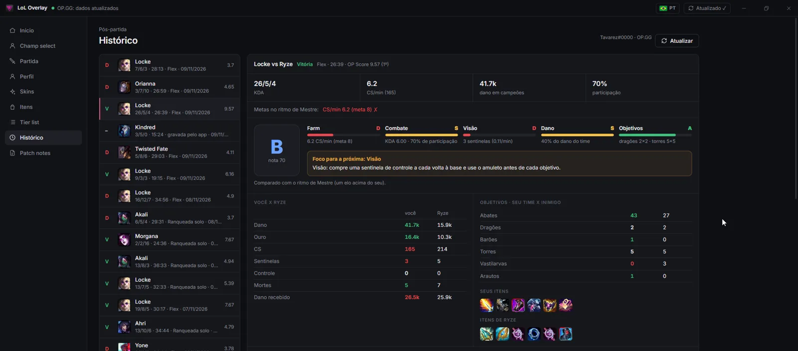
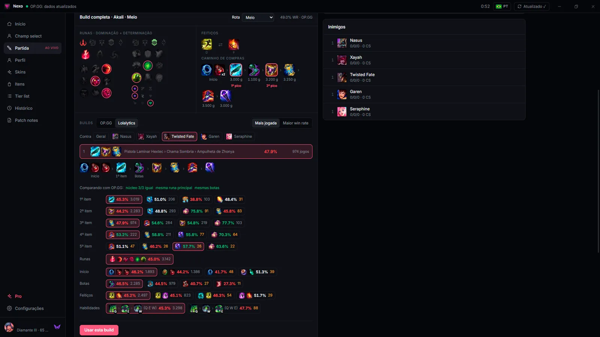

Da seleção de campeões à vitória, sem abrir outra aba.
Build do meta importada assim que você escolhe o campeão, overlay em partida com a próxima compra e uma nota de desempenho no final.
Grátis · funciona sem conta · usa só dados públicos

Você trava o campeão. O resto o Nexo faz.
Picks, bans e build
Sugestões baseadas no seu histórico e no meta. Quando você escolhe o campeão, runas e feitiços são importados sozinhos no cliente.
Também prevê a rota de cada inimigo.
A próxima compra, com o motivo
O overlay olha seu ouro e a partida e diz o que comprar agora e por quê.
Junto, o ouro de cada rota e os timers de dragão, arauto e Flash.

Uma nota justa de D até S
Você contra o seu oponente direto, objetivos e o que treinar na próxima.
Farm, visão, lutas, dano e objetivos, cada um com sua nota.

A build do meta, com o porquê de cada item.
Runas, itens e win rate do patch atual. No app, se você cair em outra rota, a build troca com um clique na champion select.
Exemplo. No app, os números vêm do OP.GG e do Lolalytics.
Outras telas do app

Builds de OP.GG e Lolalytics lado a lado, por confronto, com o win rate de cada item.
Planos
Pagamento único. Nada renova sozinho.
Dúvidas
O Pro é opcional: o app inteiro funciona sem conta.
Isso é permitido pela Riot?
O app só lê o que o próprio cliente do LoL expõe e dados públicos. Não altera o jogo nem automatiza jogadas.
Preciso criar conta?
Não. Sem conta o app funciona com a conta do LoL aberta no PC. A conta serve para comprar o Pro e usar em outro computador.
Funciona em qual elo?
Em todos. As builds usam o elo escolhido nas configurações.
Como troco de PC?
Entre na sua conta no app do PC novo. Se já estiver em 2 PCs, libere um em Minha conta.
O Pro renova sozinho?
Não. É pagamento único por Pix ou cartão.
Pronto para a próxima fila?
Windows 10 e 11 · atualiza sozinho · funciona sem conta